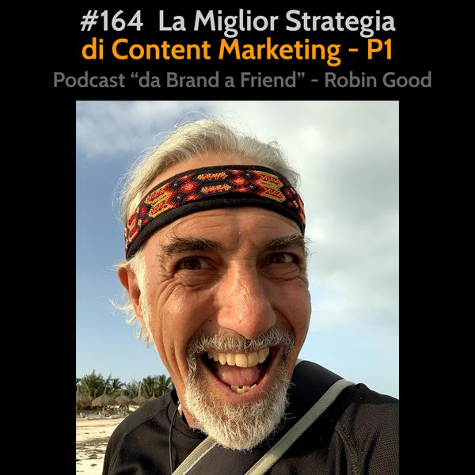

La Miglior Strategia di Content Marketing - P1

*La Miglior Strategia di Content Marketing Part 1*
Le strade per distinguersi in maniera netta dall'infinito numero di potenziali concorrenti in grado di scrivere e pubblicare articoli sul tema/argomento/problema di cui tu / la tua azienda si occupa, sono due.
1) Creare contenuti WOW.
Con questo termine intendo contenuti di alto valore / spessore che si differenziano dai tipici articoli che vengono pubblicati su siti web e blog, nel formato e nel tipo di approccio utilizzato per essere realizzati. A differenza del format usato per creare articoli, i contenuti WOW di alto valore e spessore utilizzano un'ampia gamma di content *formats* diversi. Cataloghi, indici, directory, guide approfondite, learning paths, calendari di eventi, interviste ad esperti, toolkit e molti altri ancora. Questi format hanno in comune la caratteristica di raccogliere informazioni, dati e risorse esistenti e di contestualizzarle, organizzarle e presentarle in maniera personalizzata per un pubblico ed una esigenza specifica.
2) Creare tool e strumenti utili.
In questo caso la strategia di content marketing è quella di andare oltre la redazione di contenuti da leggere o consultare, passando alla realizzazione di strumenti, app, software od anche di tool mentali in grado di risolvere alcuni fra i problemi che affliggono di più la propria tribù (audience) di riferimento.
I vantaggi specifici di questo approccio sono evidenti:
a) tool e strumenti che risolvono - almeno in parte - un problema tipico del tuo pubblico di riferimento, sono rari, difficili da trovare e hanno un valore intrinseco più alto di qualsiasi articolo a riguardo.
b) i benefici che questi tool generano sono replicabili e riutilizzabili nel tempo, all'infinito. Chi li usa, non ha semplicemente un informazione in più, ma ha uno strumento che integra info e conoscenze per facilitare la realizzazione di uno specifico task.
c) risparmiano tempo, energia e frustrazioni.
d) non richiedono di capire, comprendere, studiare. Fanno il lavoro sporco senza chiedere nulla in cambio.
e) sono immediati. Fanno ciò che devono fare senza consumare nostro tempo addizionale, ma anzi riducendolo drasticamente.
f) mostrano in maniera inequivocabile che chi li ha prodotti è altamente competente nel campo al punto di essere in grado di sviluppare soluzioni e tool, a differenza della concorrenza che produce per lo più consigli, raccomandazioni e strategie da seguire.
g) sono facilmente condivisibili e pertanto, quando sono realmente utili e ben fatti, si diffondono rapidamente e spontaneamente nella tribù di riferimento.
h) possono generare una grandissima quantità di link entranti da siti, blog, social media allorché scoperti e apprezzati da autori nella tribù di riferimento che li condividono con il loro pubblico.
i) il costo di realizzare tali tool, strumenti e app è alla portata di qualsiasi imprenditore/autore indipendente.
Per tutti questi motivi ritengo che realizzare tool e strumenti utili per il proprio pubblico di riferimento sia in assoluto la strada più efficace per ottenere visibilità, apprezzamento, e un aumento significativo della nostra credibilità, autorevolezza e competenza in ciò che facciamo.
Chi invece del solo parlare è in grado di costruire ponti, scialuppe e trampolini che vanno specificamente incontro alle esigenze della propria tribù non potrà che derivarne maggior popolarità, apprezzamento e fiducia.
Ascolta anche:
Contenuti che Spaccano Esempi di Successo
https://www.spreaker.com/user/robingood/97-contenuti-che-spaccano-esempi-di-succ_1
Contenuti che Spaccano: Directory di Settore
https://www.spreaker.com/user/robingood/98-contenuti-che-spaccano-directory-di-s
Contenuti che Spaccano: Libri e Film
https://www.spreaker.com/user/robingood/99-contenuti-che-spaccano-libri-e-film
Contenuti che Spaccano: Template e Checklist
https://www.spreaker.com/user/robingood/100-contenuti-che-spaccano-template-e-ch
Contenuti che Spaccano: Toolkit
https://www.spreaker.com/user/robingood/101-contenuti-che-spaccano-toolkit
Contenuti che Spaccano: Tool su Misura
https://www.spreaker.com/user/robingood/102-contenuti-che-spaccano-tool-su-misur
Contenuti che Spaccano: Newsradar
https://www.spreaker.com/user/robingood/103-contenuti-che-spaccano-newsradar
Contenuti che Spaccano: Newsletter
https://www.spreaker.com/user/robingood/104-contenuti-che-spaccano-newsletter
Contenuti che Spaccano: Calendari di Settore
https://www.spreaker.com/user/robingood/105-contenuti-che-spaccano-calendari-di-
Contenuti che Spaccano: Podcast e Altri Format
https://www.spreaker.com/user/robingood/106-contenuti-che-spaccano-altri-format
Content Marketing di Spessore
https://www.spreaker.com/user/robingood/32-content-marketing-di-spessore
-------------
Info Utili
• Musica di questa puntata:
AI-generated music track by Evoke Music.
https://evokemusic.ai/
• Dammi feedback:
critiche, commenti, suggerimenti, idee e domande unendoti al gruppo Telegram https://t.me/@RobinGoodPodcastFeedback
• Ascolta e condividi questo podcast:
https://gopod.me/RobinGood
• Diventa sostenitore:
sostieni il lavoro di Robin Good e tutti i contenuti e risorse utili che condivide costantemente
https://robingood.it
• Seguimi su Telegram:
https://t.me/RobinGoodItalia
(tutti i miei contenuti, immagini, audio e video in un solo canale)
oppure
Su Facebook:
https://facebook.com/RobinGoodItalia/
Su Instagram:
https://instagram.com/RobinGoodItalia
• Newsletter:
http://robingood.it/toptools-newsletter
• Per info e richieste:
mailto: Ludovica.Scarfiotti@robingood.it